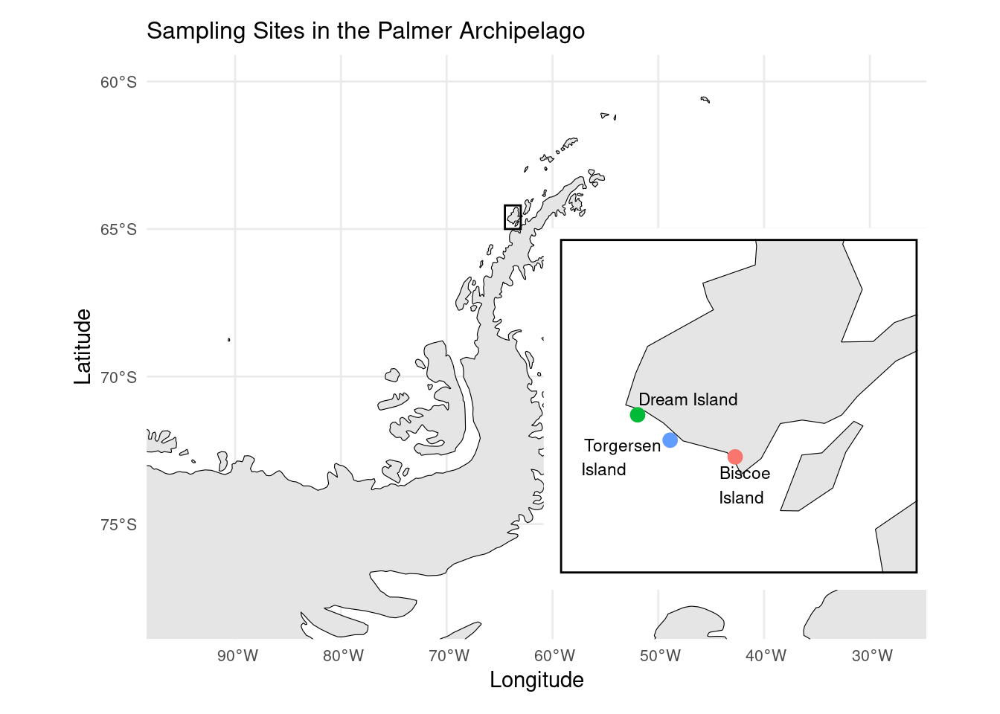

data("penguins")
# Coordenadas obtenidas a partir del artículo original (https://doi.org/10.1371/journal.pone.0090081)
coordinates <- data.frame(
Island = c("Biscoe\nIsland", "Torgersen\nIsland", "Dream Island"),
Latitude = c(-64.800, -64.767, -64.717),
Longitude = c(-63.767, -64.067, -64.217)
)
# Get Antarctica and nearby islands data
antarctica <- ne_countries(scale = "medium", continent = "antarctica", returnclass = "sf")
# Main map (Antarctica)
main_map <- ggplot(data = antarctica) +
geom_sf(fill = "gray90", color = "black") +
theme_minimal() +
geom_rect(
xmin = -64.5, xmax = -63, ymin = -65, ymax = -64.2,
color = "black", fill = NA, linewidth = 0.5
) +
labs(title = "Sampling Sites in the Palmer Archipelago", x = "Longitude", y = "Latitude") +
coord_sf(xlim = c(-95, -28), ylim = c(-78, -60)) +
theme(
axis.text = element_text(size = 8),
plot.title = element_text(size = 12)
)
# Inset map (Palmer Archipelago region)
inset_map <- ggplot(data = antarctica) +
geom_sf(fill = "gray90", color = "black") +
geom_point(data = coordinates, aes(x = Longitude, y = Latitude, color = Island), size = 3) +
geom_text_repel(data = coordinates, aes(x = Longitude, y = Latitude, label = Island),
hjust = -0.1, vjust = 0.5, size = 3) +
theme_bw()+
theme(legend.position = "none",
axis.text = element_blank(),
axis.ticks = element_blank(),
axis.title = element_blank(),
panel.border = element_rect(color = 'black', size = 1),
panel.grid = element_blank()) +
coord_sf(xlim = c(-64.5, -63), ylim = c(-65, -64.4)) +
labs(x = "Longitude", y = "Latitude")
# Combine the main and inset map
main_map +
inset_element(inset_map, left = 0.55, # Start near the right side
bottom = 0.10, # Start close to the bottom
right = 0.99, # End near the right edge
top = 0.75, # End partway up from the bottom
align_to = 'full')